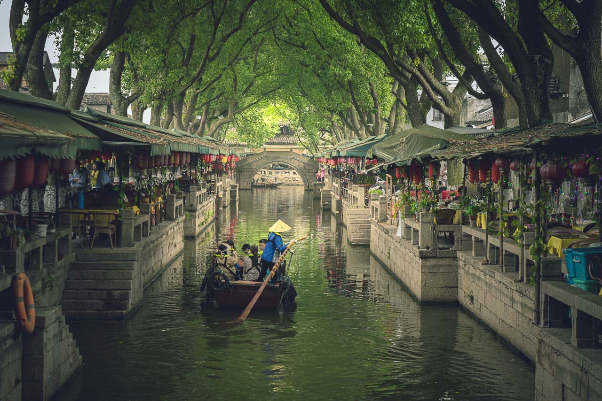

Ruta: Shanghái (PVG) → Suzhou (SZV)
Fechas: 28 Jul - 04 Aug 2026
Precio: $129 USD / ¥883 CNY
Tipo: Ida y Vuelta
Duración estimada: 1h 05min
Suzhou es conocida por sus canales, jardines clásicos y ambiente tranquilo. Es una ciudad ideal para conocer la elegancia histórica de China.